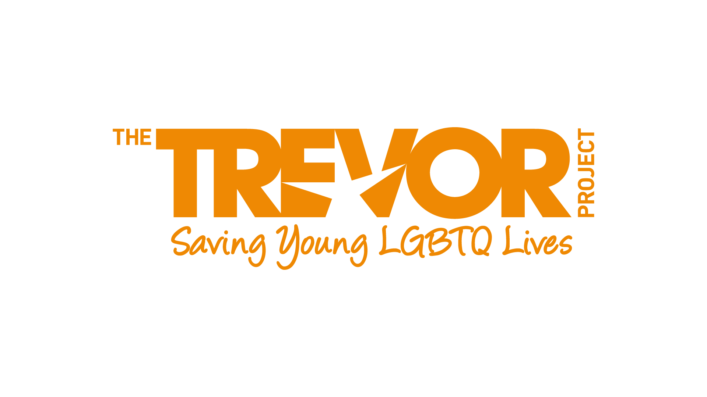
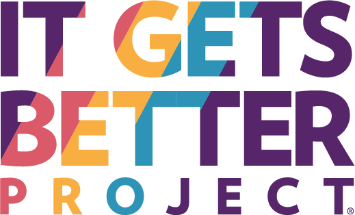
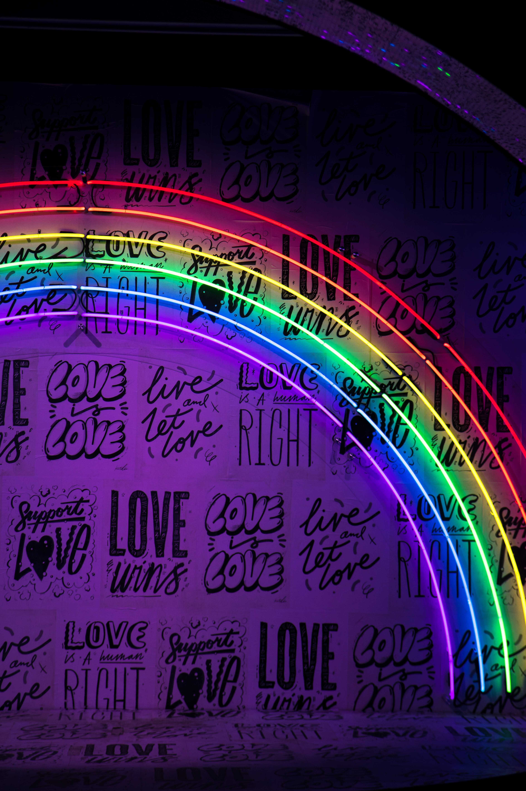
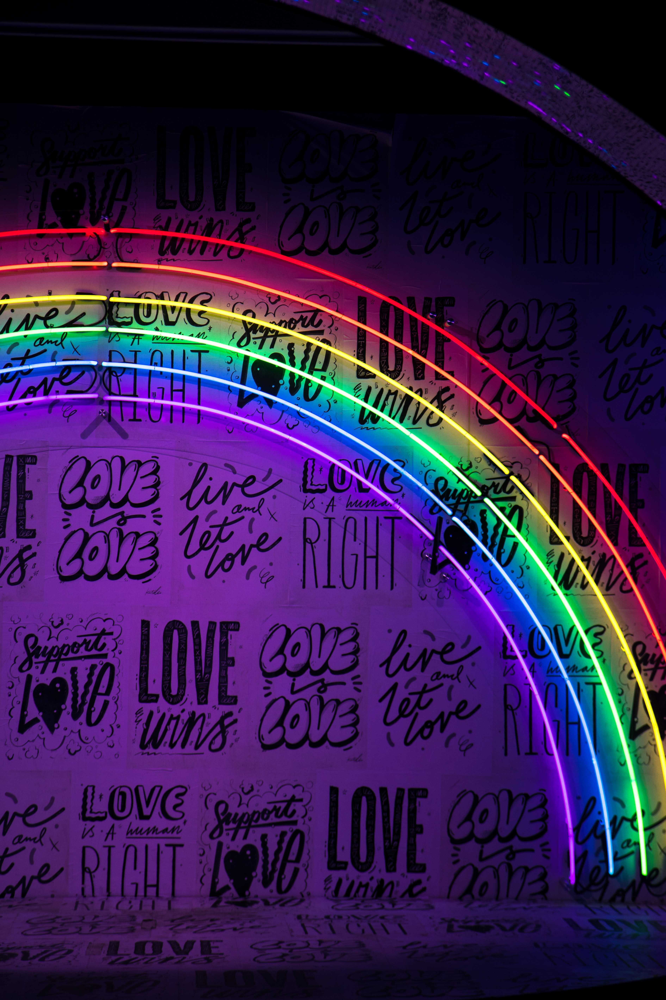
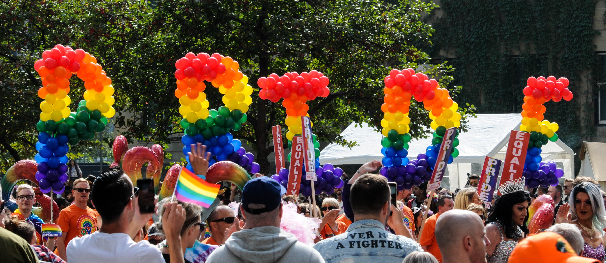
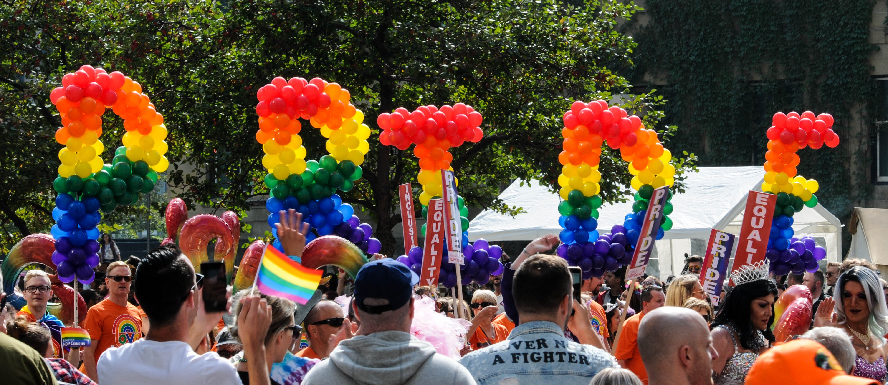

There are numerous resources for LGBTQ individuals, including many organizations and funds to help out LGBTQ individuals. While this page will mainly focus on LBGTQ resources for youth, you can find an extensive list of links on GLADD's resource list. GLADD is an organization dedicated to increasing LGBTQ acceptance founded after the Stonewall Uprisings.
LGBTQ+ Youth Resources
The Trevor Project provides crisis intervention and suicide prevention services for LGBTQ+ individuals under 25
It Gets Better Project is a project dedicated to show stories from other LGBTQ+ individuals to show youth that there is hope out there
Q Card Project helps empower and connect queer youth to quality healthcare that meets their needs
The Validation Station is a texting service that provides non-binary and transgender individuals free texts that help affirm their gender identity by sending uplifiting messages.
The LGBT National Help Center helps provide confidential and free support for LGBT individuals over phone.
  


 
